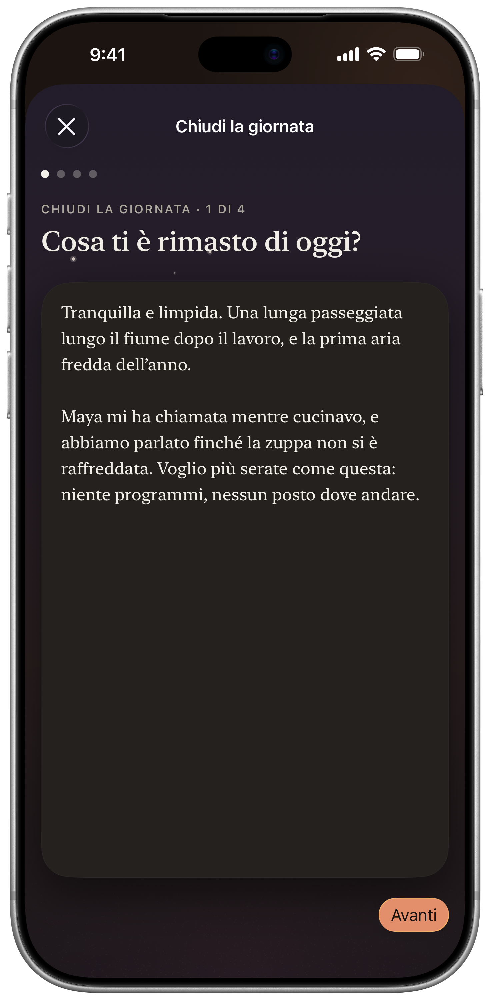
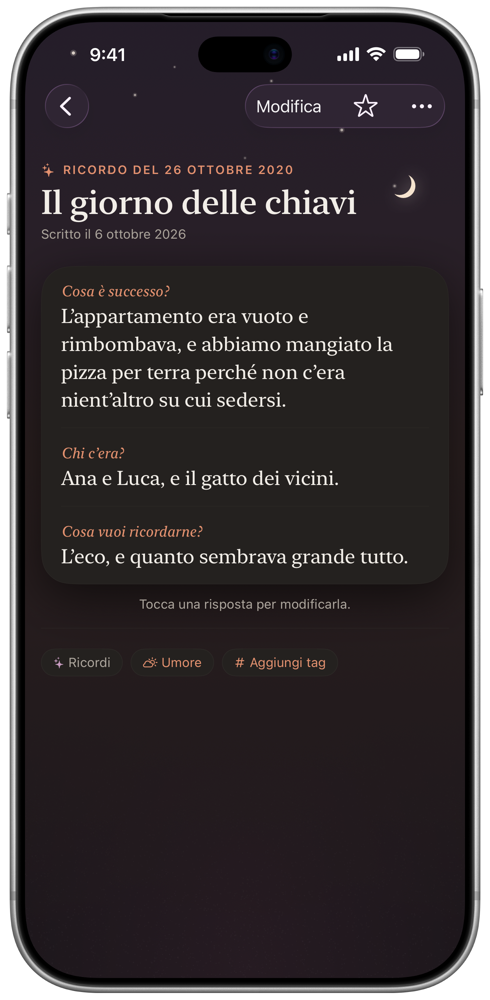
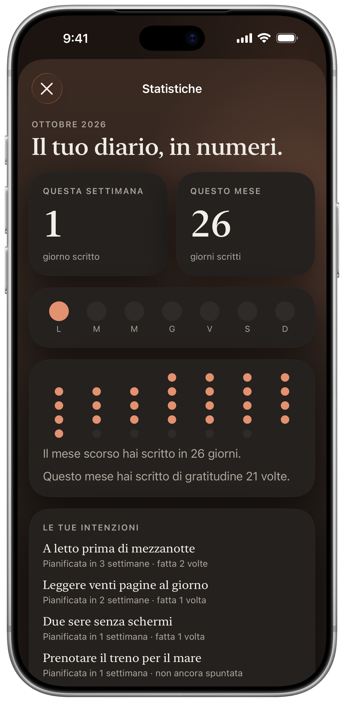

Sera21:15
Lascia andare la giornata.
Quattro brevi domande prima di dormire, e puoi saltare quelle che vuoi. Una parola o una pagina intera: in ogni caso, la giornata resta.

Anni dopoNello stesso giorno
Il passato torna da sé.
Scrivi un ricordo con il giorno in cui è successo davvero: il tuo primo appartamento, un’estate di tanti anni fa. Ogni anno, in quella data, Velunda te lo riporta.

Mese dopo meseLe tue abitudini, non un punteggio
Conosciti meglio.
Quanto spesso scrivi, a cosa torni di continuo, come cambia il tuo umore nel tempo. Tutto calcolato sul dispositivo. Nessuna serie da mantenere, nessun punteggio da inseguire.
